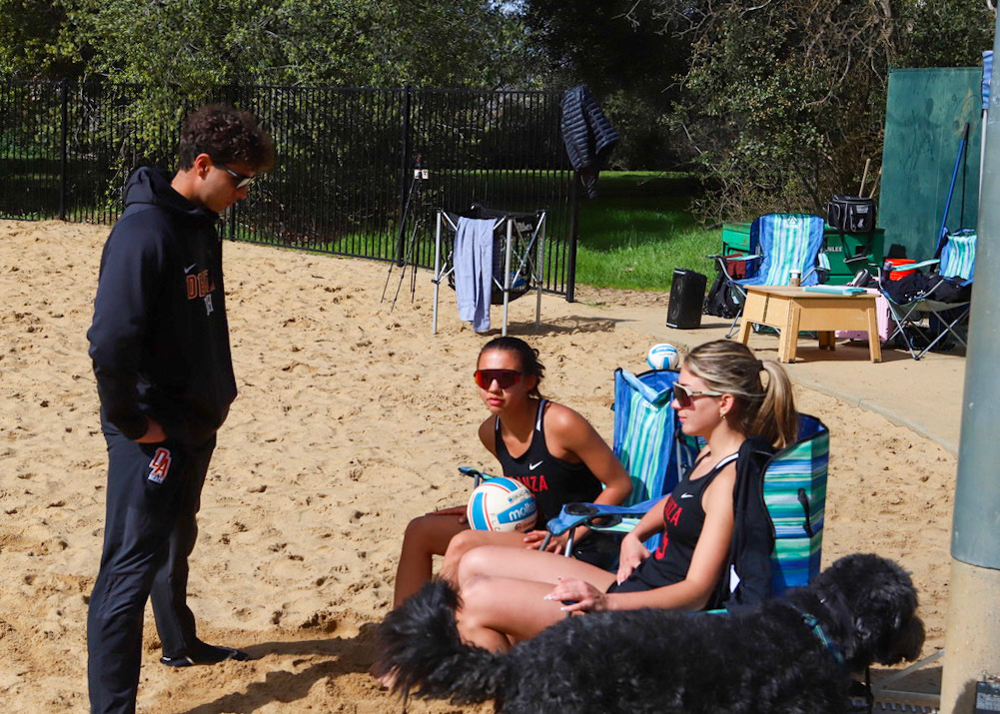
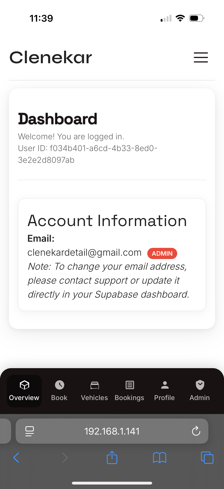

About Me
My story, goals, and the experiences that shape how I work.
Professional Objectives
In the short term, I am seeking an internship or early career role where I can apply mathematics, computational thinking, and clear communication ideally in a technology environment like Google. I want to grow as a problem solver who can turn complex ideas into practical solutions while collaborating with diverse teams.
Long term, I aim to build a career that combines computational science with leadership and mentoring. Coaching volleyball taught me how to teach skills, manage pressure, and support others’ growth habits I want to carry into technical and professional settings. Evenually having my own company that helps others.
Education
San Diego State University — 2026–2028
B.S. Mathematics with an Emphasis in Computational Science (also listed as Computational Mathematics)
De Anza College — 2023–2026
A.S. Computer Science for Transfer
University Preparatory Academy — 2019–2023
High school diploma
Relevant Involvements
Volleyball Coaching
As JV Head Volleyball Coach at University Prep Academy and Assistant Coach (indoor & beach) at De Anza College, I designed practice plans, led game day decisions, managed schedules and travel logistics, and communicated with players, parents, and athletic staff. I also served as a bilingual liaison, translating instructions and supporting clear communication across diverse teams.
Hospitality & Operations
As a Food Runner at Joey Restaurants Valley Fair, I worked in high volume service environments, coordinating between kitchen and front of house staff and delivering reliable guest experiences under time pressure.
Contact
Email: hectorhdzreyes05@gmail.com
Phone: (408) 341-5600
Photos & Visual Highlights
Images that represent my life, coaching, and recent technical projects.
Hector Hernandez Reyes

Teaching Beach Volleyball

Recent Work: Clenekar Car Detailing Website